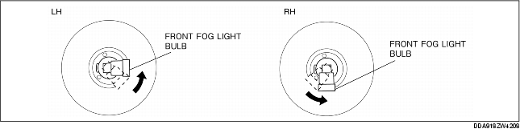

FRONT FOG LIGHT BULB REMOVAL/INSTALLATION
id091800468600
1. Disconnect the negative battery cable.
2. Slightly bend back the mudguard.
3. Remove in the order indicated in the table.
|
1
|
Connector
|
|
2
|
Front fog light bulb
|
-
Caution
-
• A halogen bulb generates extremely high heat when it is illuminated. If the surface of the bulb is soiled, excessive heat will build up and the life of the bulb will be shortened. When replacing the bulb, hold the metal flange, not the glass.
4. Install in the reverse order of removal.
5. Adjust the front fog light aiming. (See FRONT FOG LIGHT AIMING.)
Front Fog Light Bulb Removal Note
1. Remove the front fog light bulb by turning it in the direction of the arrow.
